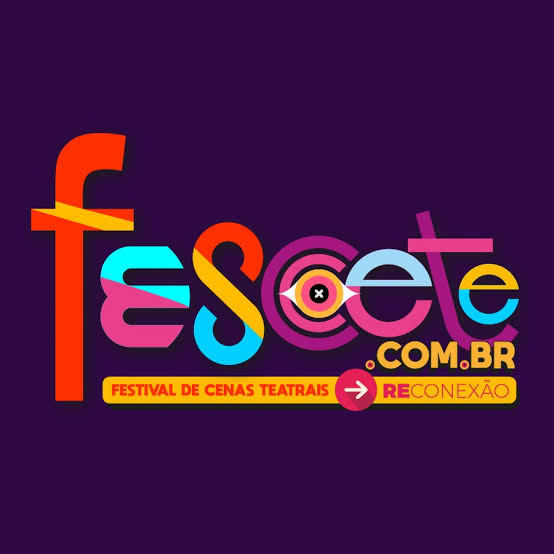

Os Meus Feitos

Minha Produção
Em minha jornada de aprimoramento artístico, participei da criação de uma peça original. Atuei como coautor e diretor cênico. Cada cena reflete o empenho da equipe e a troca criativa que vivenciamos.

Arte Nobre – Companhia de Teatro
Companhia nascida na escola com apoio de um professor experiente. Cresceu com apresentações externas, mantendo essência jovem, criativa e socialmente engajada.

O Fescete
Festival estudantil de teatro em Santos (SP). Um espaço de formação, competição, inclusão e trocas entre artistas jovens e experientes. Participei como ator na obra "Eu, Milhões de Mim.".